扉页
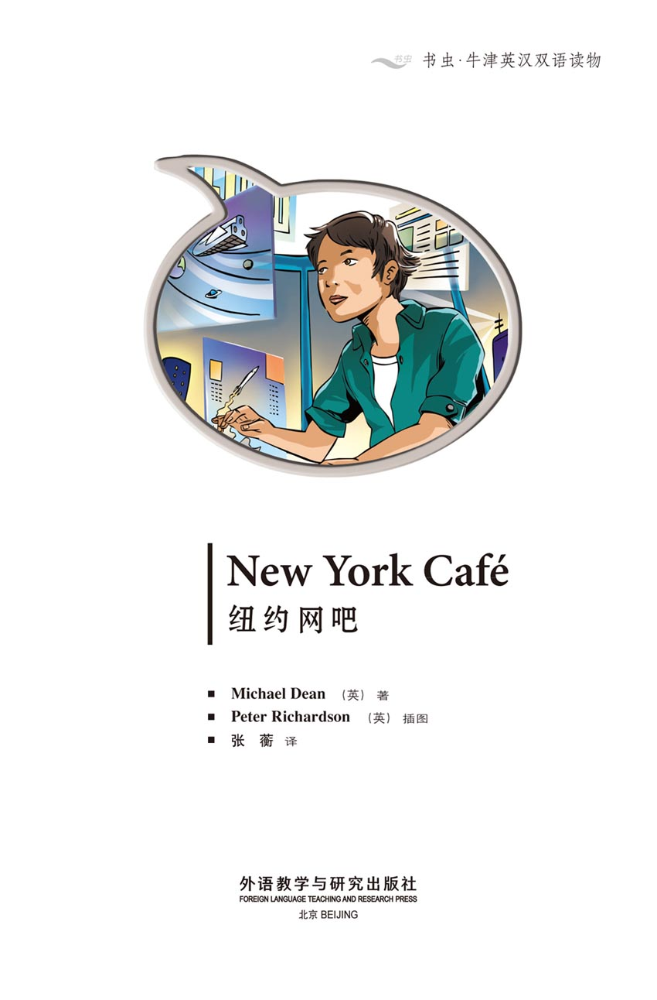
版权页
京权图字：01-2013-7804
Published by arrangement with Oxford University Press for sale in the People's Republic of China only and not for export therefrom. This edition is for sale in the mainland of China only, excluding Hong Kong SAR, Macao SAR and Taiwan.
© Oxford University Press 2008
Oxford is a registered trademark of Oxford University Press
图书在版编目（CIP）数据
纽约网吧：英汉对照／（英）迪安（Dean, M.）著；（英）理查森（Richardson, P.）绘；张蘅译．—北京：外语教学与研究出版社，2013.11
（书虫·牛津英汉双语读物）
书名原文：New York café
ISBN 978-7-5135-3773-5
Ⅰ．①纽… Ⅱ．①迪…②理…③张… Ⅲ．①英语—汉语—对照读物②短篇小说—英国—现代 Ⅳ．①H319.4：I
中国版本图书馆CIP数据核字（2013）第272367号
出版人： 蔡剑峰
责任编辑：杨雅琼
封面设计：蔡 颖
出版发行：外语教学与研究出版社
社 址：北京市西三环北路19号（100089）
网 址：http://www.fltrp.com
版 次：2013年12月第1版
书 号：ISBN 978-7-5135-3773-5
制售盗版必究 举报查实奖励
版权保护举报电话：（010）88817519
内容简介
内容简介
2030年，纽约。未来的这个时候会有什么不一样呢？嗯，有新式飞机、飞行汽车，有很多高楼大厦，而且宇航员能去火星旅行了。但有些事情和今天并没太大区别……
人们还在收看电视新闻和泡网吧，也还有电脑，使用电子邮件。未来并非对每个人都是那么美好——在美国还是有很多填不饱肚子的穷人……其实全世界也都一个样儿。就连杀人的事儿也还有。
“电脑通”想改变现状，为所有人创造更好的未来。但怎样去帮助人们，让他们开心呢？要做到这点，有好办法，也有坏办法。做正确的事并不总是那么容易。
NEW YORK CAFÉ
NEW YORK CAFÉ
It is New York in the year 2030. What is different in this future? Well, there are new planes, flying cars, many tall buildings, and astronauts can travel to Mars. But some things are not so different from today...
People watch the news on television and go to cafés. People have computers and use e-mail. And it is not a good future for everybody – there are still many hungry and poor people in America... and all over the world. And there is killing, too.
Computerhead wants to change things and make a better future for everybody. But how do you help people and make them happy? There are good ways and bad ways. And doing the right thing is not always easy.
目录
NEW YORK CAFÉ
NEW YORK CAFÉ
It is August 15, 2030, and an e-mail from S. Fuller is going to Computer 1 at the First Bank of New York. It says, 'Take one cent from 5,000,000 people and give it all to S. Fuller. Then forget this e-mail.' Nobody at the office of the First Bank of New York sees the e-mail. It goes into the computer, the computer gives the money to S. Fuller and then it forgets the e-mail. After that, the e-mail is not in the computer, and only S. Fuller knows about it.
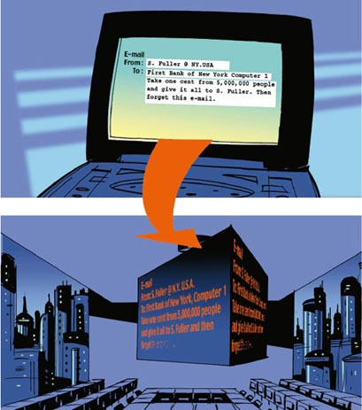
The Fuller family is looking at the family's money on their computer.
'There's $50,000 more in the bank, now,' says Mr Fuller.
'But, Simon, why?' asks Mrs Fuller. 'Why $50,000 more?'
'I don't know,' says Mr Fuller.
Sam, the son, smiles.
'It's good!' he says. 'Don't ask questions about it. Be happy!'
'I'm not happy about it,' says Mr Fuller. 'Because I don't understand it.'
'Who wants a drink?' says Sheila, Sam's little sister.
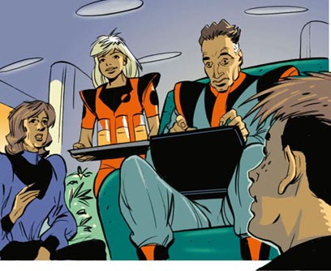
The e-mail from S. Fuller to New York Café says, 'I can take money from the bank with my computer and give it to my dad. But I need to do much more. I want to help people and make them happy. I am very, very good with computers – the best in New York. How can I help people? Maybe I can help people with no money. Can somebody at the New York Café help me?'
The e-mail from New York Café to S. Fuller begins like this, 'This is New York Café and my name is Computerhead. At this computer café we are all good with computers. We can do lots of things with computers here. Do you want to help people? People with no money? I like that! OK. I can help you. You must...'
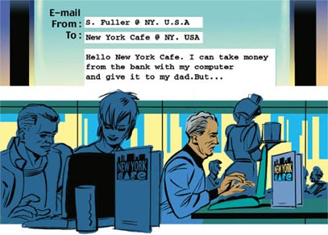
Two astronauts are going to Mars. But suddenly one of them says, 'Hey, the computer's taking us back to New York. We're not going to Mars. We're going back home. I can't stop this computer!'
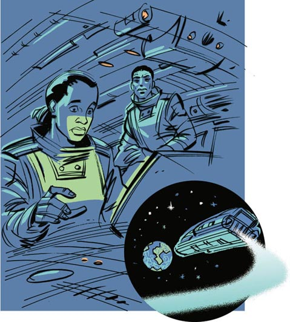
One of the astronauts says, 'What's that? An e-mail?' The e-mail to the astronauts says, 'Do not go to Mars. It does not help poor people. It does not make them happy. I can stop your computers again. And again and again. So give $1,000,000,000 to people with no money TODAY and then tell the television people. I want it on the news!'
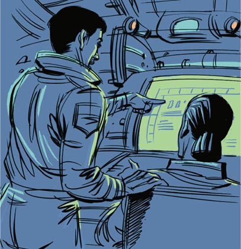
The next day, the Fuller family watch the news on television. The news-reader is saying, 'Two astronauts are back in New York. Something's wrong with the computer...' There is a picture of the astronauts and a picture of the computer. But there is nothing on television about $1,000,000,000 for people with no money.
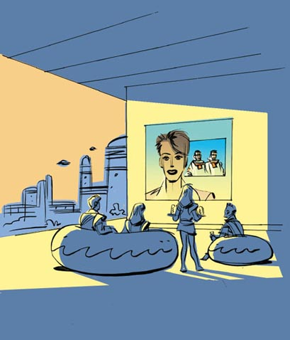
A plane is going from New York to London. But then suddenly the plane's computer stops it. The plane waits over New York. It gets an e-mail message. 'All the people on this plane have a lot of money. Give some of your money to poor people by e-mail, now. Then you can go to London.'
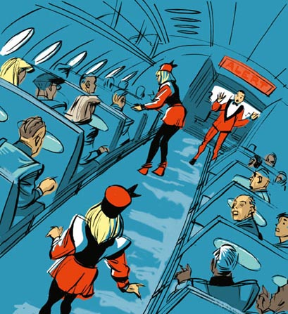
Some very important people are talking in New York.
'Who's doing this to the computers?'
'We don't know.'
'Well, we must find him. How can we find him?'
'We're looking for a signal, from his computer. Every computer has a signal. When we find the signal, we find him.'
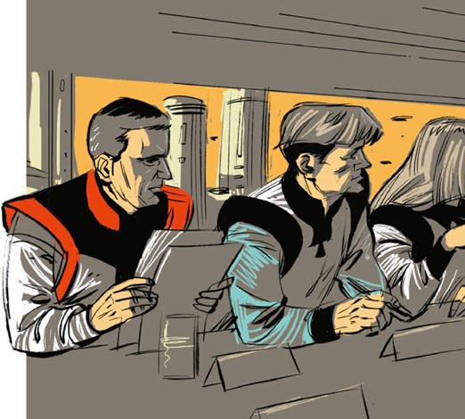
'OK. But I tell you this: He must stop now. Do you understand?'
'Well, we can give a new password to all the important computers in the country. And without a computer's password he can't get into the computer.'
'OK. Give new passwords to all the important computers in America. At the same time, find the signal from his computer. But most important, find him!'
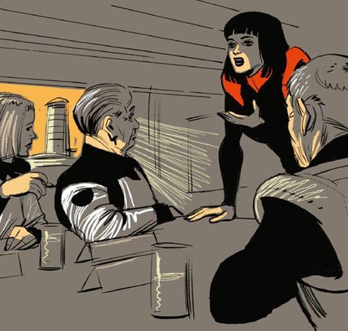
S. Fuller e-mails Computerhead at New York Café and says, 'I am not happy. The police are putting new passwords in all the important computers in America. I cannot get into them. I do not want to stop now. Computerhead, help me!'
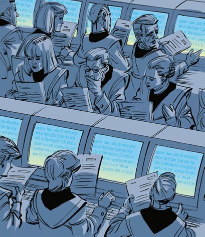
The e-mail from Computerhead at New York Café to S. Fuller says, 'Fuller no, please do not stop your work. I am an old man now. I do not know you, but I have a picture of you in my head. I see a young man. What are you, seventeen or eighteen years old? And you want to do something good! OK! Let's do something very good. I can help you. Let's talk again tomorrow.'
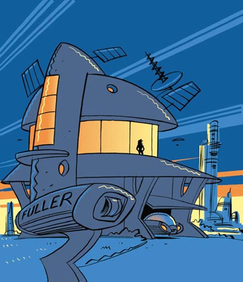
Today's e-mail from Computerhead to S. Fuller says, 'I am sending you a box. It can help you. When you send a signal to any computer, it finds the computer's password. And then you are in the computer and you can do anything with it. Any computer in America is your computer. Let's talk again tomorrow.'
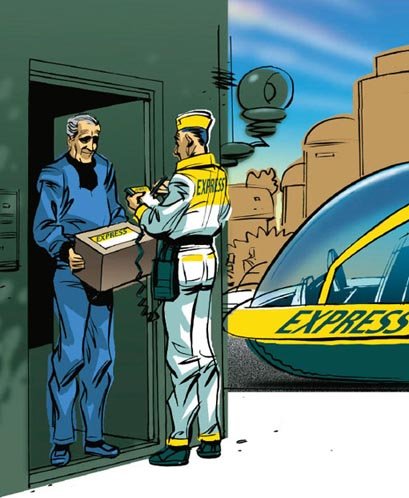
Computerhead sends S. Fuller an e-mail. It says, 'Fuller, there is one more thing. The police are looking for your computer signal. From now on, send everything by e-mail to me at New York Café. Later I can send it out again from here, with a lot of new signals. Then, they cannot find your signal. Fuller, tomorrow is an important day for you.'
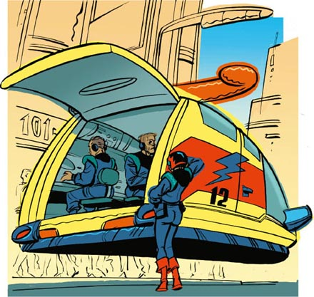
The next e-mail from Computerhead to S. Fuller says, 'Fuller, this man's name is Smith. You must get his computer password. But get his computer password at home, not at work. It is easy. I know this man because I work with him. What is his work? He kills people.'
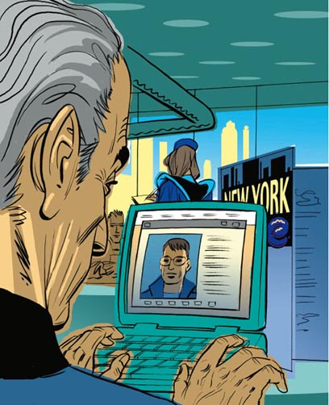
Another e-mail from Computerhead to S. Fuller says, 'Yes, Smith kills people. And I help him. But now I am doing something good, for the first time. Tomorrow you and I can help poor people. Tomorrow we can do something big. Tomorrow people must listen to us. We want a new America, Fuller. A new America!'
Mr and Mrs Fuller are very happy, but the children are not.
'Hey, we're going sailing for two weeks,' says Mr Fuller.
'Oh no!' says Sam. 'I want to stay here.'
'Me too,' says his little sister, Sheila.
'But why, Sam?' says Mrs Fuller.
'Mum, I'm eighteen. I have important things to do,' says Sam.
'Important things? What important things?' says Mr Fuller.
'I can't tell you that,' says Sam.
'Oh, Simon, it's OK,' says Mrs Fuller. 'You and I can go. The children can stay here.'
'OK,' says Mr Fuller. But he is angry and leaves the room.
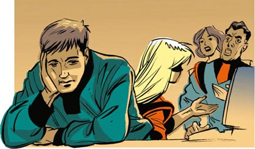
The e-mail from S. Fuller to Computerhead at New York Café says, 'My mum and dad are sailing now. I have more time at the computer. Mr Smith's password is his daughter's name. I am in Smith's computer now. He works in Washington. I am going into the President's computer. I can do a lot of things now. Look at the next picture!'
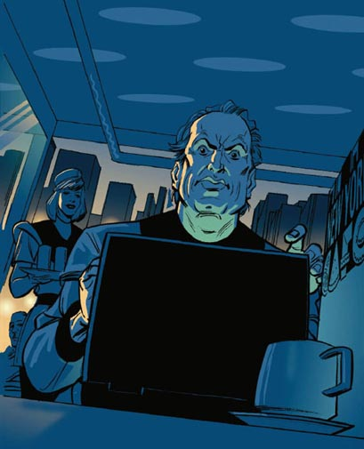
S. Fuller sends the President an e-mail. It says, 'Dear Mr President. Look at this picture. The missiles can stay in the sky or they can come down. I can bring them down with my computer. Are you listening to me, Mr President? I want a better America. I do not want money. Not for me. I want money for poor people. And sandwiches. Give sandwiches to poor people. Start now, or they all come down tomorrow.'
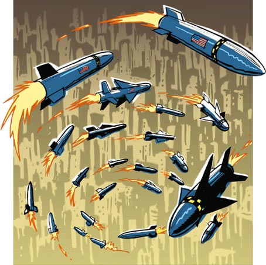
The President has S. Fuller's e-mail and he is very angry.
'Sandwiches! Sandwiches! Can we stop this? Please?'
'No, Mr President. I'm sorry. We can't find the signal.'
'What do we do now?'
'Give money to poor people, Mr President. Make sandwiches. Do anything for now. We need more time.'
'OK. You! Yes, you. The tall man in the white shirt. Go and make some sandwiches.'
'Yes, Mr President.'
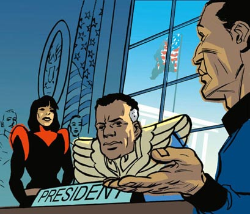
A woman is running into the President's office.
'Mr President,' says the woman. 'We have his signal. It's coming from a computer café in New York.'
'OK!' says the President. 'Get him!'
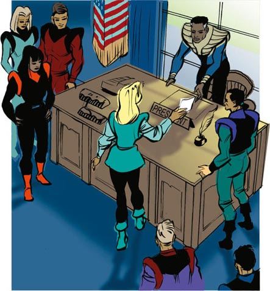
'A better America. I want a better America,' says Computerhead. The police take him away. Then they look at his computer at the New York Café. There is an e-mail there. It is from S. Fuller.
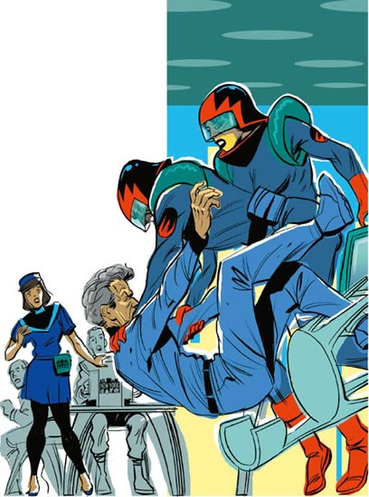
The police have Sam now, too. Sam is very afraid. He says, 'Stop! I must phone my mum and dad. They're sailing. And my little sister's here. I can't leave her. Why are you doing this? Please stop.'
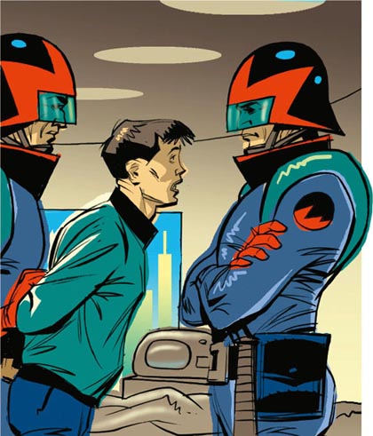
Mr and Mrs Fuller are with their son. They are talking to the police.
'Sam?' says Mrs Fuller. 'Our Sam and this... Computerhead? Sorry, but I must laugh.'
'It's not our Sam,' says Mr Fuller. 'Sam can't understand computers. His teachers help him, but he's no good.'
'Yes,' says Mrs Fuller. 'Sheila helps him too. Sheila's very good with computers.'
'Oh yes,' says Mr Fuller. 'Sheila's the best girl in New York with computers.'
Mr Fuller looks at Mrs Fuller and then Mrs Fuller looks at Mr Fuller.
'Where's Sheila?' say Mr and Mrs Fuller.
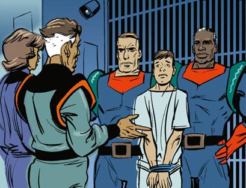
S. Fuller's last e-mail to Computerhead says, 'Hello. Where are you? My e-mails to you come back all the time. Can you see the picture? Look at the missiles, in the Washington sky. They are going to New York, London, Tokyo, Paris, Moscow and Rome too. But I cannot get them down, Computerhead. Can you help me? What do I do now?'
GLOSSARY 词汇表
GLOSSARY
词汇表
bank n. you put your money in a bank, but you can have it when you want it again 银行
Mars n. it is up in the sky; it is red 火星
maybe adv. perhaps 可能，也许
news n. a TV programme that tells about things that happen 电视新闻
news-reader n. someone who reads the news 新闻播报员
password n. a number or word you use for opening a computer 密码
poor adj. people with no money or very little money are poor 贫穷的，贫困的
president n. the most important man or woman in America, the first president of the United States was George Washington （美国）总统
sailing n. going through water on a boat 驾船出行，航行
send v. you can write to a friend with a pen and send it or you can send your friend an e-mail from your computer to her or his computer 寄（信）；发送（电子邮件）
signal n. every computer leaves a mark or signal when it sends a message （计算机发出的）信号
ACTIVITIES 阅读练习
New York Café
ACTIVITIES
阅读练习
ACTIVITIES
Before Reading
1 Look at the picture on the cover of the book. Now answer these questions.
1) Which word is important for the story?
Choose one answer.
a □ cars
b □ computers
c □ planes
2) What do you think? For each sentence choose one answer.
a) The story is about a young boy or girl who is very good at computers.
Yes □／No □
b) The story says 'Computers are more important than people.'
Yes □／No □
c) The story says 'Be careful with computers.'
Yes □／No □
2 Read the back cover of the book. For each sentence choose one answer.
1) The story happens in
a) □ America.
b) □ Britain.
c) □ your country.
2) The end of the story is
a) □ happy.
b) □ not happy.
c) □ not a or b.
ACTIVITIES
While Reading
1 Read from AUGUST 15 to AUGUST 17, then answer these questions.
1) How much money does S. Fuller get from the First Bank of New York?
2) What does the computer do with the e-mail after it gives the money to S. Fuller?
3) Who knows about S. Fuller's e-mail to the bank?
2 Read from AUGUST 18 to AUGUST 20, then answer these questions.
Who... ?
1) ... is going to Mars and then goes back home?
2) ... sees the astronauts on television?
3) ... gets an e-mail saying 'Give some of your money to poor people.'
3 Read from AUGUST 21 to AUGUST 24. Are these sentences true (T) or false (F)?
1) All the computers in America get new passwords.
T □／F □
2) S. Fuller needs Computerhead's help with the new passwords.
T □／F □
3) Computerhead is a young man.
T □／F □
4) S. Fuller gives Computerhead a box that can find a computer's password.
T □／F □
4 Read from AUGUST 25 to AUGUST 26 and answer these questions.
1) Who is looking for S. Fuller's computer signal?
2) Where must S. Fuller send all e-mails now?
3) What does Smith do?
4) Who goes to the sea for two weeks and who stays at home?
5 Read from the first AUGUST 27 to the fourth AUGUST 27. Who says or thinks these words?
1) 'I can do a lot of things.'
2) 'Look at this! He can bring missiles down with his computer.'
3) 'Yes, Mr President.'
4) 'We have his signal.'
6 Before you Read from the fifth AUGUST 27 to the end of the story, guess which of these happens.
1)□ The police find Computerhead at the Computer Café and take him away.
2)□ The police do not find Computerhead but he and S. Fuller do not send the missiles.
3)□ The police find S. Fuller before S. Fuller sends the missiles to Washington.
4)□ The police find S. Fuller only after S. Fuller sends the missiles to Washington (and more cities).
ACTIVITIES
After Reading
1 Put these sentences in the right order.
a □ Mr and Mrs Fuller go to the sea.
b □ S. Fuller sends all his e-mails to the New York Café.
c □ S. Fuller sends an e-mail to the astronauts.
d □ Important computers have new passwords.
e □ The First Bank of New York gives $50,000 to Mr Fuller.
f □ The police find Computerhead.
g □ S. Fuller gets into Smith's computer.
h □ Computerhead helps S. Fuller find the new passwords.
i □ S. Fuller sends an e-mail to a plane.
j □ The police find S. Fuller.
k □ S. Fuller and Computerhead send missiles into the sky.
2 You are S. Fuller. Send a last e-mail to Computerhead.
'Hello. There is something I must tell you. My name is...'
_________________________________________________________________________________________________________________________________________________________
3 Look at each picture, then answer the questions.
1)
Who are these people?
What are they doing?
What are they wearing?
2)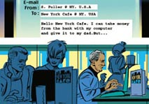
Where is this?
Who are the people?
What are they doing?
3)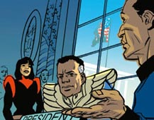
Where is this?
What is happening?
TRANSLATION 参考译文
TRANSLATION 参考译文
New York Café
纽约网吧
2030年8月15日，一封来自S. 富勒的电子邮件正发往纽约第一银行1号电脑。邮件写道：“从500万人的账户上分别转账1美分给S. 富勒，然后忘掉此邮件。”在纽约第一银行办事处，谁都没有看到这封邮件。邮件进了电脑后，电脑把钱划拨给S. 富勒，接着就把邮件给忘了。这之后，邮件就不在电脑里了，只有S. 富勒知道这件事。
富勒一家人正在电脑上查看家庭账目。
“现在银行里多出了5万美元。”富勒先生说。
“可是，西蒙，这是怎么回事？”富勒太太问，“为什么会多出5万美元？”
“我不知道。”富勒先生说。
他们的儿子萨姆笑了。
“这是件好事！”他说，“别问了。尽管乐吧！”
“可我乐不起来，”富勒先生说，“因为这钱来得不明不白。”
“谁想喝点饮料？”萨姆的妹妹希拉问。
S. 富勒发给纽约网吧的电子邮件写道：“我能用自己的电脑把银行的钱取出来，给我爸爸。但我还要做更多事情。我想帮助别人，使他们快乐。我对电脑非常非常在行——是全纽约最棒的。我怎样才能帮助别人？也许我能帮助那些身无分文的人。纽约网吧有谁能帮帮我吗？”
纽约网吧给S. 富勒的邮件是这么开头的：“这里是纽约网吧，我的名字叫‘电脑通’。这家网吧里的人都是电脑高手。在这里，我们能用电脑做很多的事情。你想帮助别人，帮那些没钱的人，是吗？我喜欢这个想法！好的，我可以帮你。你必须……”
两名宇航员正前往火星。突然，其中一名宇航员说：“嘿，电脑正在把我们带回纽约。我们不是在去火星的途中。我们在往回走。我无法让这台电脑停下来！”
其中一名宇航员说：“那是什么？一封电子邮件？”这封给宇航员的电子邮件写道：“不要去火星。这么做对穷人没有帮助。这不会使他们快乐。我能够再次停掉你们的电脑，而且能一而再、再而三地这么做。所以，今天就拿出10亿美元给那些身无分文的人，然后告诉电视台的人。我要这件事上新闻！”
第二天，富勒一家看电视新闻。新闻播报员说：“两名宇航员已返回纽约。电脑发生了故障……”电视上出现了宇航员和电脑的画面，但没有提到给穷人10亿美元的事。
一架飞机正从纽约飞往伦敦，但是突然间，飞机的电脑停止了飞机的前行。飞机在纽约上空盘旋等待。它收到一条电子邮件信息：“这架飞机上的人全都很有钱。现在，通过电子邮件把你们的钱分一些给穷人，然后你们就可以去伦敦了。”
在纽约，一些重要人物正在交谈。
“是谁对这些电脑动了手脚？”
“我们不知道。”
“好吧，我们必须找到此人。怎么才能找到他呢？”
“我们正在搜索他的电脑发出的信号。每台电脑都有自己的信号。当我们找到信号时，就能找到他。”
“好。但我告诉你们：他必须立刻罢手。你们明白吗？”
“哦，我们可以给全国所有重要的电脑设置一个新密码。没有密码，他就无法进入电脑。”
“好。给全国所有重要的电脑都设置新的密码。与此同时，找到他的电脑信号。但最重要的是，找到他！”
S. 富勒给纽约网吧的“电脑通”发电子邮件写道：“我高兴不起来。警察正在给全国所有重要的电脑设置新密码。我进不去这些电脑了。我不想现在就罢手。‘电脑通’，帮帮我！”
纽约网吧的“电脑通”给S. 富勒的电子邮件写道：“富勒，不，请不要收手。我现在老了。我不认识你，但我脑子里想象得出你的模样。我看到的是一个年轻人。你多大了，17还是18岁？而且你想做些好事！好！我们来做些大好事。我可以帮你。明天再聊。”
今天“电脑通”给S. 富勒发的电子邮件写道：“我给你寄了一个盒子。它可以帮你。你给任何一台电脑发送信号时，它都会找到这台电脑的密码。然后你就可以进入电脑做任何事情。美国的任何一台电脑都是你的了。明天再聊。”
“电脑通”给S. 富勒发了一封电子邮件。邮件写道：“富勒，还有一件事。警方正在搜索你的电脑信号。从现在开始，把所有信息都用电子邮件发送到纽约网吧我这里来。随后我会把你的信息从这里再发出去，并带上很多新信号。这样他们就找不到你的信号了。富勒，明天对你来说是个重要的日子。”
“电脑通”在发给S. 富勒的下一封邮件中写道：“富勒，这个人名叫史密斯。你必须弄到他的电脑密码。但要弄到他家里电脑的密码，而不是他的工作电脑。这很容易。我认识他，是因为我们在一起工作。他是做什么的？他杀人。”
另一封“电脑通”发给S. 富勒的电子邮件写道：“是的，史密斯杀人，而我帮他做事。但现在我在做好事，这是头一次。明天你和我就能帮助穷人了。明天我们可以做一件大事。明天人们必须听从我俩。我们想要一个崭新的美国，富勒，一个崭新的美国！”
富勒夫妇兴冲冲的，但孩子们却不开心。
“嘿，我们要驾船出游两个星期。”富勒先生说。
“哎呀，不要！”萨姆说，“我想留在这里。”
“我也是。”他的妹妹希拉说。
“可这是为什么呢，萨姆？”富勒太太问。
“妈妈，我18岁了。我有重要的事情要做。”萨姆说。
“重要的事情？什么重要的事情？”富勒先生问。
“我不能告诉你。”萨姆回答。
“哦，西蒙，没关系。”富勒太太说，“你和我去好了，孩子们可以留在这里。”
“好吧。”富勒先生说。但他生气了，离开了房间。
S. 富勒发给纽约网吧“电脑通”的邮件写道：“我父母现在驾船出游了，我有更多的时间用电脑。史密斯先生的密码是他女儿的名字。我现在进了史密斯的电脑。他在华盛顿工作。我快要进入总统的电脑了。我现在可以做好多事情。看下一张照片！”
S. 富勒给总统发了一封邮件。邮件写道：“亲爱的总统先生，看这张照片。这些导弹既可以呆在天上，也可以掉下来。我可以用自己的电脑把它们弄下来。你在听我说吗，总统先生？我想要一个更好的美国。我不想要钱。不想为我自己要钱。我想为穷人要钱，还要三明治。给穷人三明治。现在就给，不然这些导弹明天全都会掉下来。”
总统收到了S. 富勒的邮件，非常生气。
“三明治！三明治！我们能够制止这件事吗？谁有办法？”
“不能，总统先生。我很抱歉。我们找不到信号。”
“那我们现在怎么办？”
“给穷人发钱，总统先生。做三明治。眼下只能一切照办。我们需要更多的时间。”
“好。你！是的，就是你，穿白衬衫的高个子男人。去做些三明治。”
“是，总统先生。”
一个女人跑进总统办公室。
“总统先生，”女人说，“我们找到他的信号了。信号是从纽约的一家网吧发出来的。”
“好！”总统说，“抓住他！”
“更好的美国，我想要一个更好的美国。”“电脑通”说。警方把“电脑通”带走了，并查看他在纽约网吧用的那台电脑。里面有一封电子邮件，是S. 富勒发来的。
警察现在也抓住了萨姆。萨姆惊恐万分。他说：“等一下！我必须给我爸妈打个电话，他们驾船出游了。而且我的妹妹在这里，我不能离开她。你们为什么这样做？请放了我。”
富勒夫妇和他们的儿子在一起。他们在和警察交谈。
“萨姆？”富勒太太说，“我们的萨姆和这位……‘电脑通’？抱歉，但是我忍不住笑了。”
“不是我们的萨姆，”富勒先生说，“萨姆不懂电脑。他的老师们辅导他，但他根本不开窍。”
“是的，”富勒太太说，“希拉也在帮他。希拉对电脑很在行。”
“哦，是的，”富勒先生说，“希拉是全纽约的女孩中对电脑最在行的。”
富勒先生看看富勒太太，富勒太太又看看富勒先生。
“希拉在哪儿？”富勒夫妇问。
S. 富勒在给“电脑通”的最后一封电子邮件中写道：“喂，你在哪儿？我发给你的电子邮件老是被退回来。你能看到这张照片吗？看这些导弹，它们在华盛顿上空飞行，飞往纽约、伦敦、东京、巴黎、莫斯科，还有罗马。但我没办法把它们弄下来，‘电脑通’。你能帮帮我吗？我现在该怎么办？”